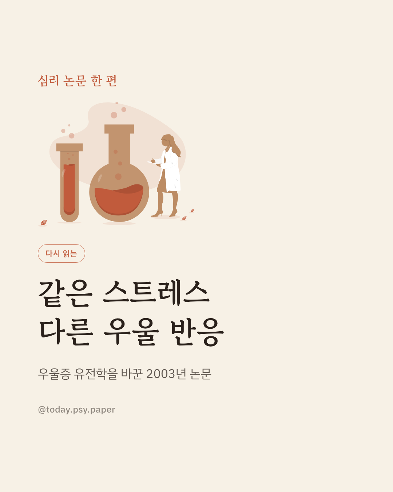
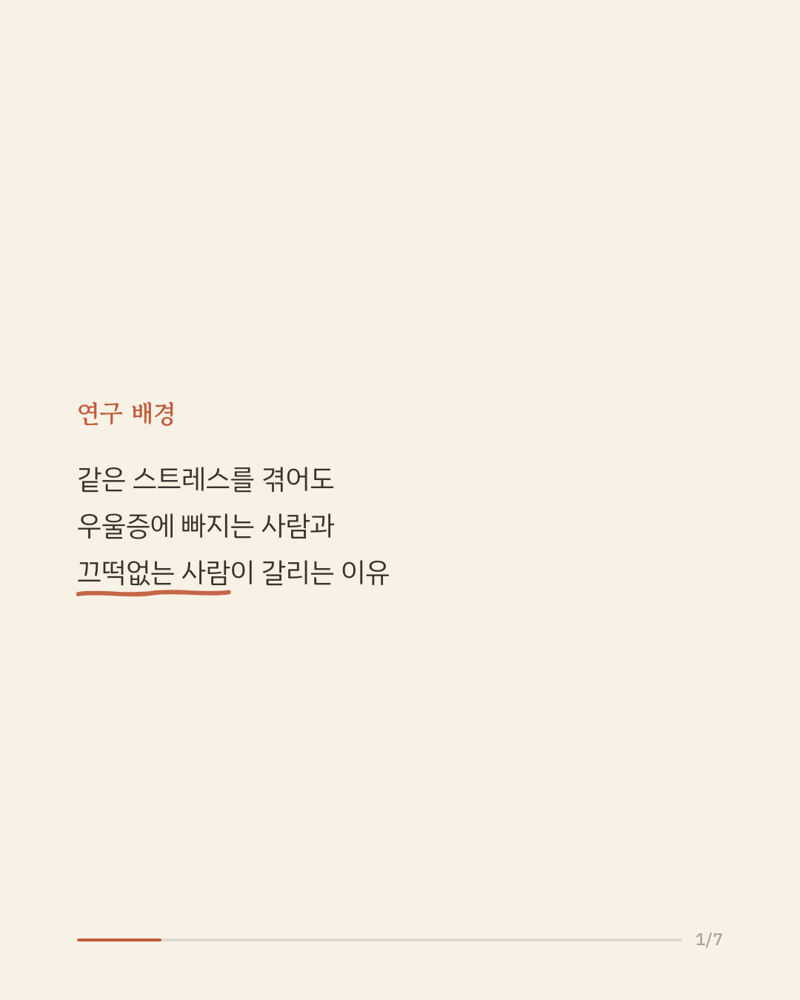
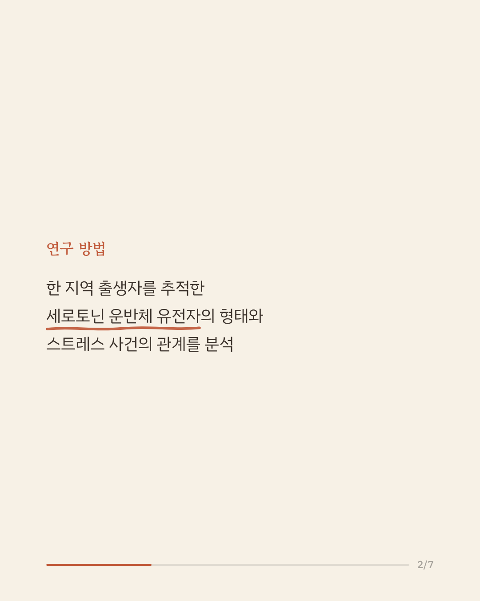
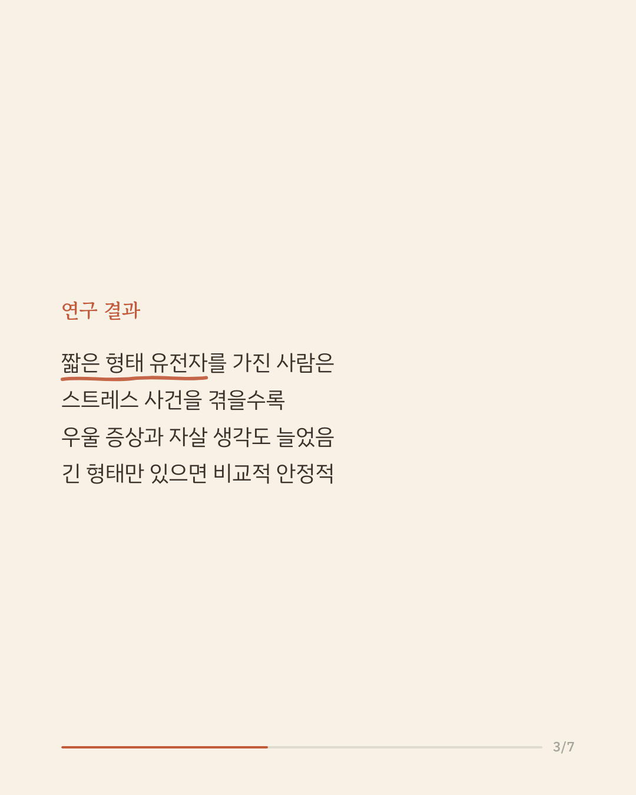
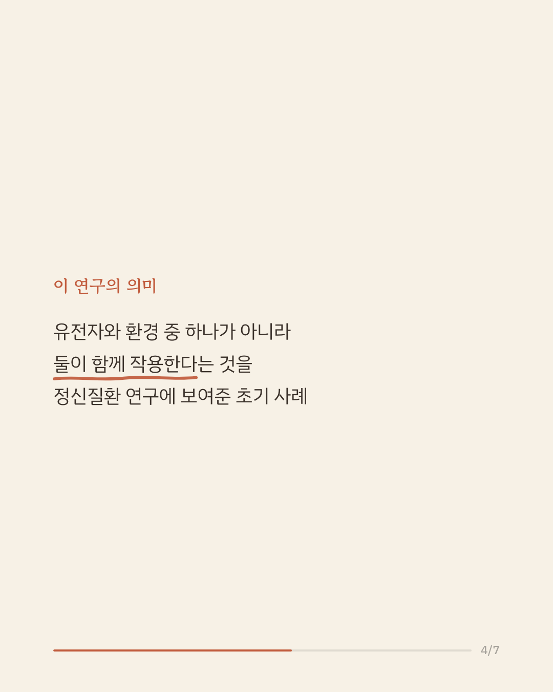
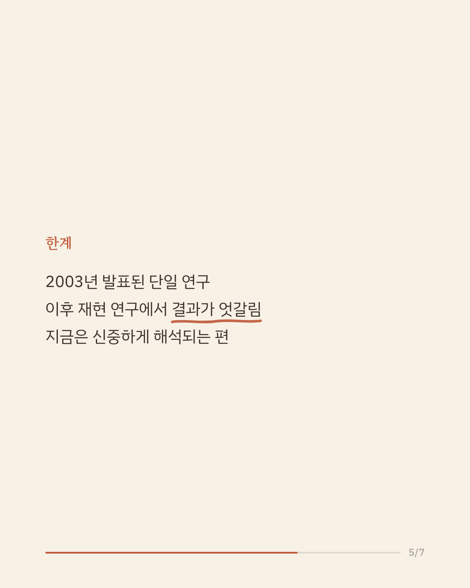
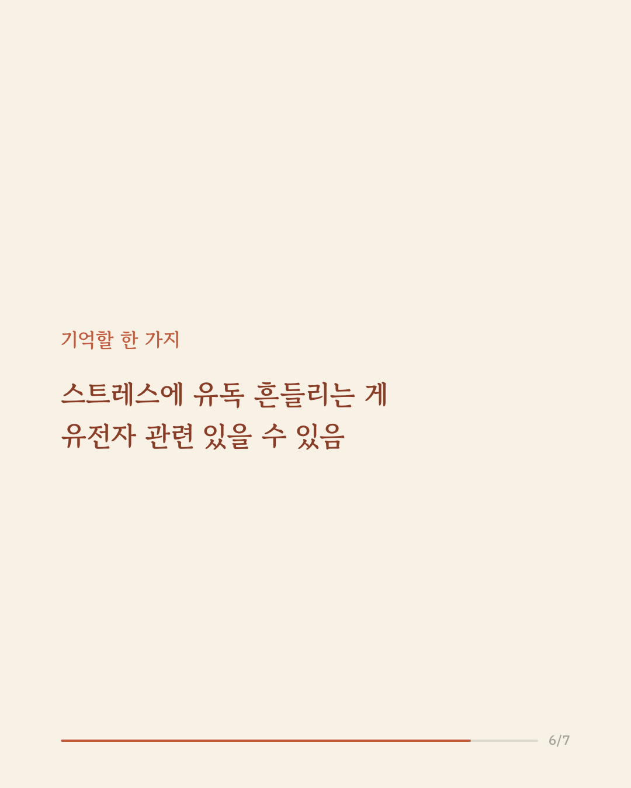
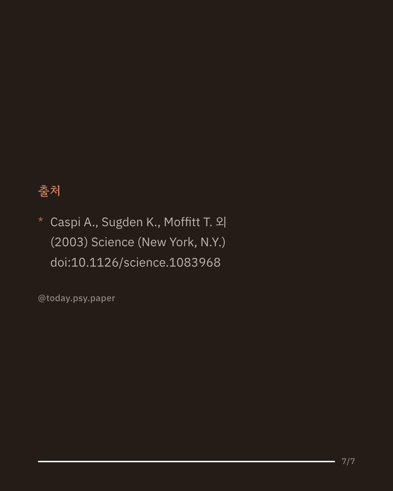

같은 스트레스를 겪어도 어떤 사람은 우울증에 빠지고, 어떤 사람은 비교적 잘 견뎌냅니다. 이 차이가 어디서 비롯되는지는 오랫동안 정신건강 연구의 오래된 질문이었습니다. 이 연구는 한 지역에서 태어난 사람들을 성인이 될 때까지 추적한 자료를 바탕으로, 세로토닌 운반체(5-HTT) 유전자의 형태가 스트레스와 우울증 사이 관계를 조절하는지 살펴보았습니다. 분석 결과, 세로토닌 운반체 유전자의 짧은 형태를 하나 또는 두 개 가진 사람은 스트레스 사건을 겪을수록 우울 증상과 우울증 진단, 자살 생각이 더 뚜렷하게 늘었습니다. 반면 긴 형태만 가진 사람은 같은 스트레스 앞에서도 비교적 안정적인 모습을 보였습니다. 이 연구는 우울증이 유전자나 환경 어느 한쪽만이 아니라 둘의 상호작용으로 설명될 수 있다는 것을 보여준 초기 사례로 평가받습니다. 다만 이후 진행된 여러 재현 연구에서는 결과가 엇갈렸고, 지금은 이 상호작용의 크기와 존재 여부를 두고 신중한 논의가 이어지고 있습니다. 단일 연구이므로 확대 해석은 조심해야 합니다. 출처: Science (2003), 'Influence of life stress on depression: moderation by a polymorphism in the 5-HTT gene' #정신건강정보 #심리학연구 #논문리뷰 #우울증연구 #유전자환경상호작용
python3 publish.py 12869766